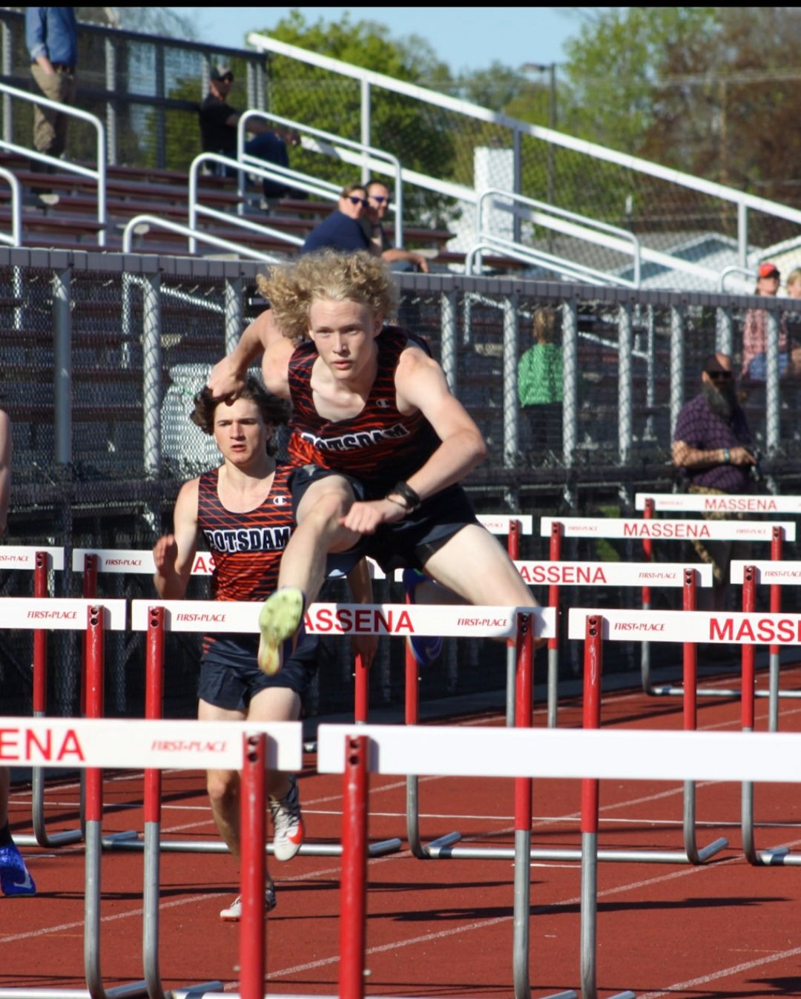

My name is Xaiden Morey, I was born at Massena Hospital NY, on January 8th.
I live with a family of 5. My mothers name is Sophie and My fathers name is Josh. I have one sister named Eliza and one brother named Felix.
I went to a lot of different preschools growing up until I eventually settled in Potsdam NY and since then I have gone to Potsdam Central between K-12. My favorite people I’ve met along the way are Baily Vink and Patrick Pase. I met Bailey in 3rd grade when he moved to potsdam. He was a new student in my class and I was the first one to talk to him and ask if he wanted to be friends with me. I met Patrick my Freshman year of High school during Indoor track and since then we’ve been best friends.
I’ve been running cross country and track since 8th grade. It is my favorite sport and I’ve gone to the state meet for the last 2 years. My favorite events are High Jump, Long jump, Triple jump, 110 meter hurdles, and 60 meter hurdles.
| High jump: | 6 feet |
| Triple jump: | 38 feet 6 inches |
| long jump: | 20 feet 3 inches |
| 60 meter hurdles: | 9.2 seconds |
| 110 meter hurdles: | 16.27 seconds |
My favorite toy is my PC, I love using it for gaming or programming or whatever else I need it for. It is very versatile and is very helpful.
The main type of game I play are FPS games but I love all games.
These are my favorites

In the future I hope to be in the cyber security field. I want to travel the world after high school. I’m hoping to find a good cybersecurity job in a large company potentially like Husky or another engineering company. In Ten years from now I’m hoping to have traveled a lot of the world and be settled down with a family and have a good job in cyber securit